BRANCH hub/integrate-20260923 · ON TOP OF PRODUCTION hub/econ-pulse-20260923 @ 3838dc7 MERGES IN ORDER: cac6cd7 report cards · 82dc204 context lens · 5a62b44 allocation · 22d63cd sentiment · ad8c32b data audit 23 SEP 2026 · NOT PUSHED, NOT DEPLOYED
Everything finished today sits on one branch now: the report cards and the library, the playable Context Lens workshop, the ALLOCATION tab, the SENTIMENT tab with its fear and greed gauge, and the data audit pages. Every picture below was taken in a real browser, at 1,680 wide and at 390 wide, with the pages served from https://scintillahub.ai and prices coming from the live chart API. I opened every one of them and describe what I see.
5 / 5pieces merged
0conflicts to hand-fix
319tests, 2 fail
2same two production fails
28screenshots taken
How the tab strip reads now
Both new master tabs are in, and the strip reads left to right:
DASHBOARD · ALLOCATION · STATION · NEWS · SOCIAL · SENTIMENT · ALERTS · SCREENER · EVENTS · ECONOMIC
ALLOCATION sits between DASHBOARD and STATION, exactly where it was asked to go. It is a link to /allocation/, so it opens the page rather than a room.
SENTIMENT sits after SOCIAL. SOCIAL keeps its own per-ticker sentiment sub-tab; the new tab is the market-wide reading.
I read the strip out of the live page at both widths, not out of the source: the ten names above are what the browser rendered on desktop and on phone.
The one place the two branches touched the same line
Git merged everything without stopping, but the ALLOCATION branch and the SENTIMENT branch both edited the same few lines that build the strip, so I checked the result by hand instead of trusting the merge:
What overlapped
Kept from ALLOCATION
Kept from SENTIMENT
How I checked
The list of master tabs
the /allocation/ address, added as its own line
SENTIMENT added to the list itself
read the line in the merged file, then read the ten rendered tabs out of the running page
The function that draws the strip
the ALLOCATION link, drawn right after DASHBOARD
untouched by this branch
read the whole function after merging; both the STATION link and the ALLOCATION link are still there
The saved screen state
—
the remembered SENTIMENT sub-tab
sub-tabs OVERVIEW, NEWS, YOUTUBE and X all answered a click at both widths
Nothing from either side was dropped. No other file was touched by two branches at once.
1 · Report cards and the company report library
hub/report-cards-20260923 @ 022e6b7
The prototypes page is now cards with a Latest feed across the top, and the library is the whole company report written out once.
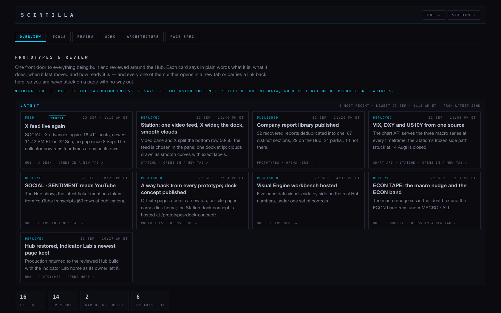
Desktop 1680. A Latest strip of nine entries — newest is “X feed live again”, 23 Sep 1:10 AM ET — then the cards. Each card says what the thing is, when it last moved and whether it opens here or in a new tab. The counts at the foot read 16 listed · 14 open now · 2 named, not built · 6 on this site. The line under the title states plainly that nothing here is part of the dashboard unless it says so.
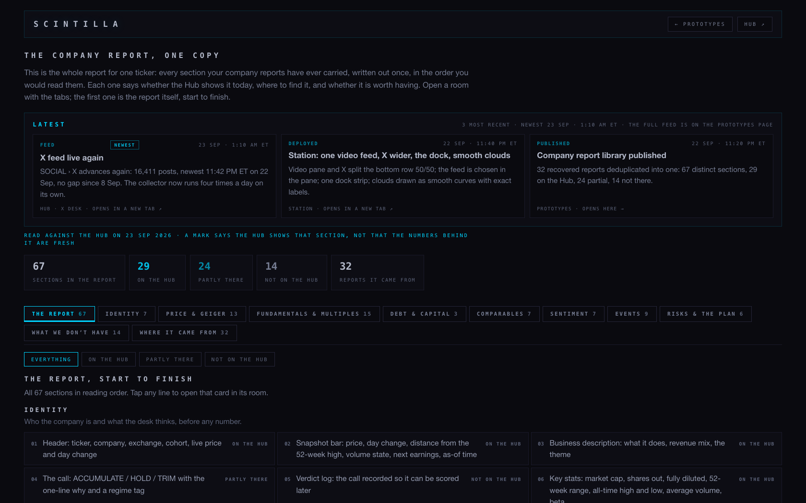
Desktop 1680. The 67-section report: 67 sections · 29 on the Hub · 24 partly there · 14 not on the Hub · from 32 reports. Below that, the sections run in reading order — Identity first, with each line marked ON THE HUB, PARTLY THERE or NOT ON THE HUB. Tabs across the middle break it into Identity 7, Price & Geiger 13, Fundamentals & multiples 15, Debt & capital 3, Comparables 7, Sentiment 7, Events 9, Risks & the plan 6.
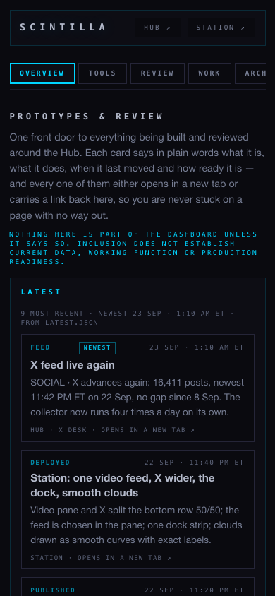
Phone 390. The cards drop to one column and stay readable.
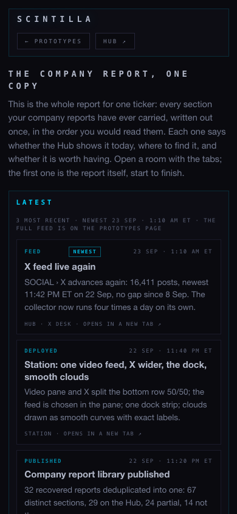
Phone 390. The five counts wrap; the section list stacks.
2 · The Context Lens workshop
hub/context-lens-workshop-20260923 @ bde1db5
Three things that used to live in three places, on one clock: Context Lens, Geiger in motion, and the Visual Engine. It loads real history and plays through it.
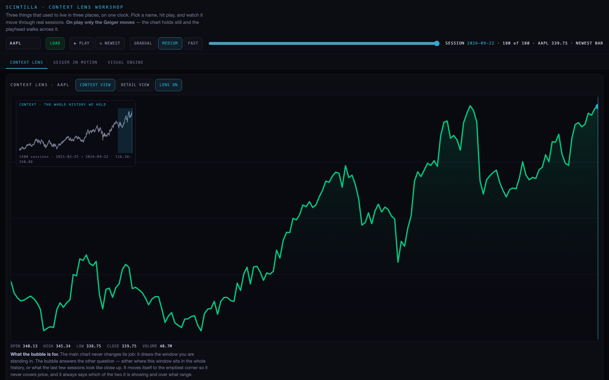
Desktop 1680, before play. AAPL loaded from the chart API: 1,400 sessions, 25 Feb 2021 → 22 Sep 2026, sitting at bar 180 of 180, last price 339.75. The small bubble top-left holds the whole history with the current window shaded; the big chart is the window itself. Open 340.13 · high 345.34 · low 338.75 · close 339.75 · volume 40.7M.
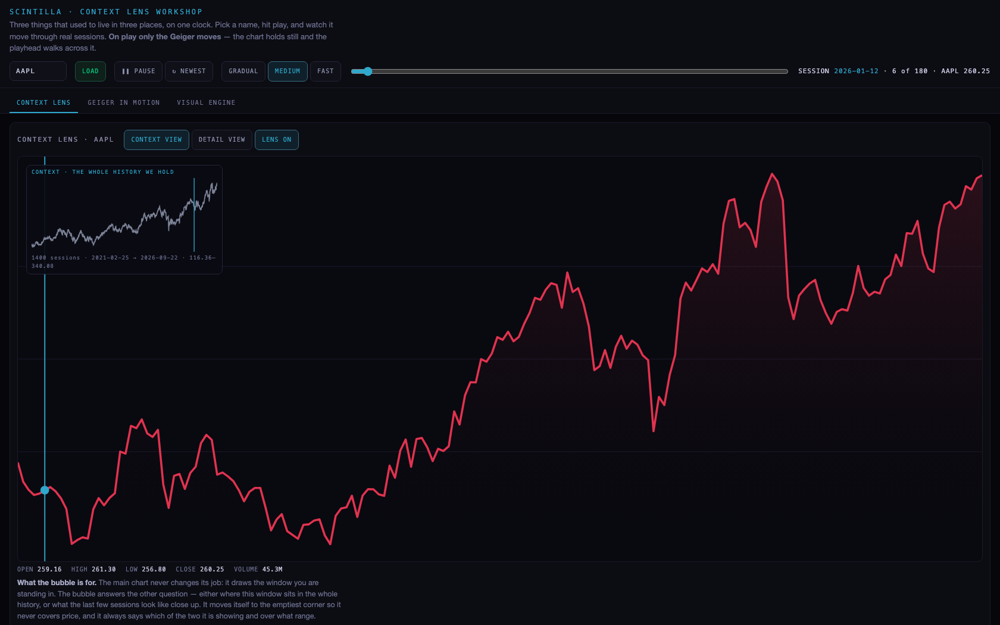
Desktop 1680, two and a half seconds after pressing play. The button now reads PAUSE and the playhead has walked back to session 2026-01-12, bar 6 of 180, AAPL 260.25 — the vertical line marks it in both the bubble and the chart. The chart itself has not moved: every peak and trough is in the same place as the still above. What changes is the Geiger reading at the playhead, which is why the line is drawn red here and green at rest. That is the behaviour the page promises in its own first line.
Not finished
This page exists only as a deliverable at /deliverables/20260923/context-lens/CONTEXT-LENS.html. There is no copy under /prototypes/context-lens/ on that branch or in production, and no card in the prototypes catalogue points at it — so from the Hub there is currently no way to click through to it. Hosting it properly is a small job, but it is not on this branch and I did not invent it.
3 · The ALLOCATION tab
hub/allocation-tab-20260923 @ b33bf41
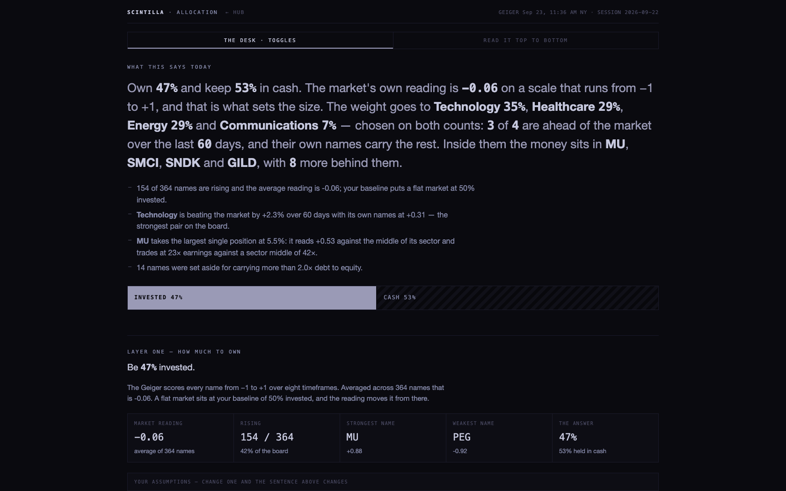
Desktop 1680. The page writes its own headline from the numbers: “Own 47% and keep 53% in cash. The market's own reading is −0.06 on a scale that runs from −1 to +1, and that is what sets the size. The weight goes to Technology 35%, Healthcare 29%, Energy 29% and Communications 7%… Inside them the money sits in MU, SMCI, SNDK and GILD, with 8 more behind them.” Underneath, the reasons are spelled out one per line, then the invested/cash bar, then Layer one with its five figures: reading −0.06, 154 of 364 rising, strongest MU +0.88, weakest PEG −0.92, the answer 47%. The two toggles at the top switch between the desk view and reading it top to bottom, and the assumptions block below lets a knob change the sentence.
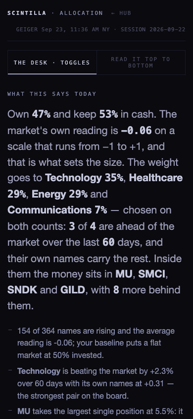
Phone 390. The headline stays the headline and the figures stack under it.
It reads the Geiger for session 2026-09-22 across 364 names, taken at 11:36 AM New York.
4 · The SENTIMENT tab
lane2/sentiment-20260923 @ 686ee9b
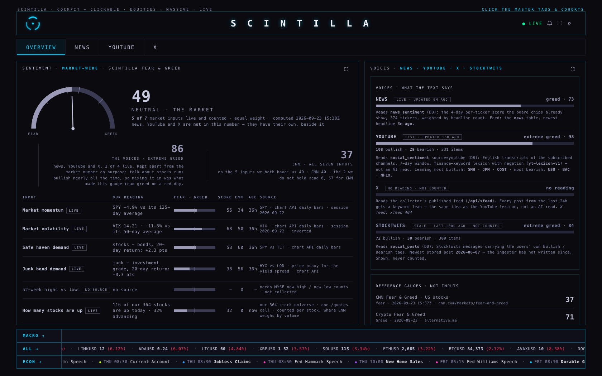
Desktop 1680, OVERVIEW. The gauge reads 49 · NEUTRAL · THE MARKET, from 5 of 7 market inputs, equal weight, computed 15:38Z. Beside it and deliberately apart: the voices at 86, extreme greed, with the page saying in words why they are kept out of the market number — “talk about stocks runs bullish nearly all the time, so mixing it in was what made this gauge read greed on a red day.” CNN's own 37 sits to the right as a reference. The table underneath shows every input with its own reading and source: market momentum (SPY +4.9% vs its 125-day average), market volatility (VIX 14.21, −11.8% vs its 50-day average, chart API daily bars), safe haven demand, junk bond demand, and how many stocks are up (116 of 364, 32% advancing).
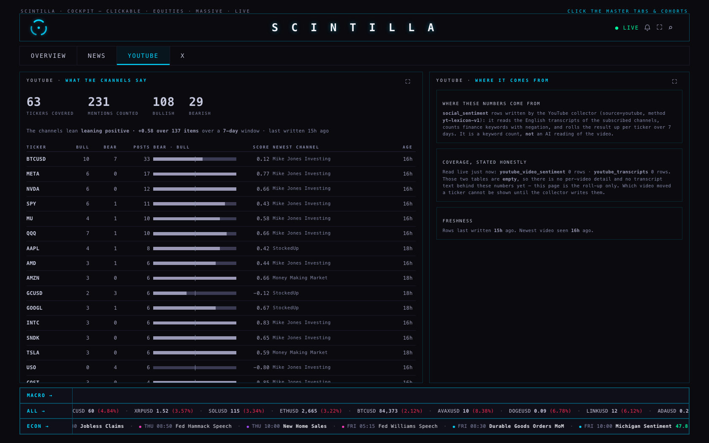
Desktop 1680, YOUTUBE. The voices panel: 108 bullish · 29 bearish · 231 items, updated 15h ago, read from subscribed-channel transcripts with a finance-word lexicon — and it says so, rather than implying a model read them.
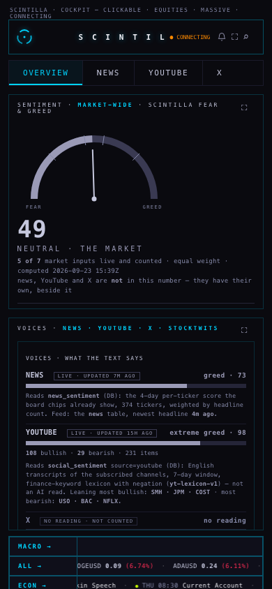
Phone 390. Gauge on top, voices under it, sub-tabs still reachable.
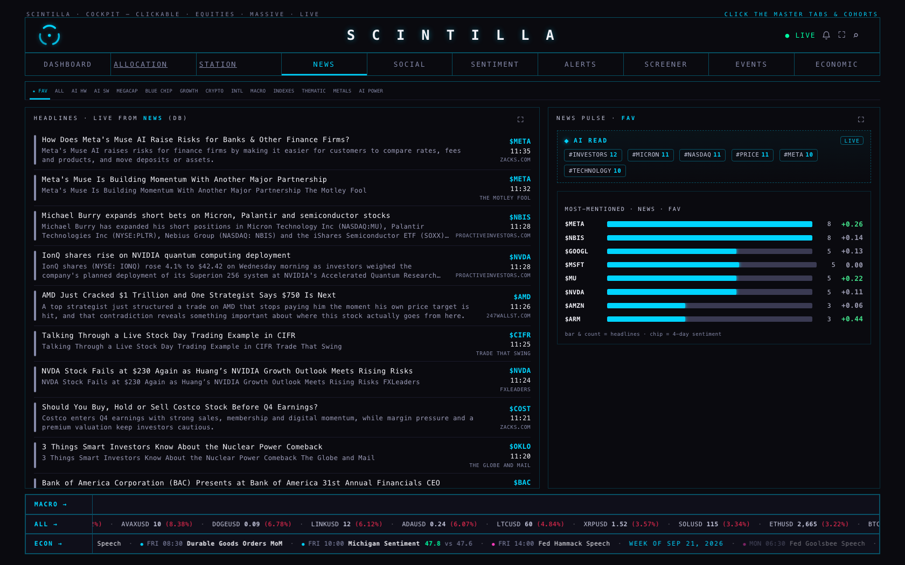
Desktop 1680, NEWS. Reads greed · 73 from the stored news scores — 374 tickers weighted by headline count, newest headline three minutes old at the time of the shot.
Not finished
X shows “no reading · not counted”. That panel reads a live address (/api/xfeed) which my local pass-through cannot answer, so it returned 404 here. On the deployed site that address exists, so this needs one look after deploy before anyone calls it broken — I have not proved it either way.
StockTwits is stale — last stored post 7 Jun, 108 days ago. The page shows it and refuses to count it, which is the right behaviour, but the ingester behind it has not written since.
52-week highs vs lows has no source — it needs NYSE new-high/new-low counts, which nothing collects today. The page marks it NO SOURCE and leaves it out of the average, which is why the gauge says 5 of 7.
5 · The data audit pages
hub/data-audit-20260923 @ d9256af
That branch carries its deliverable pages and nothing else — no Hub code — so that is exactly what came across.
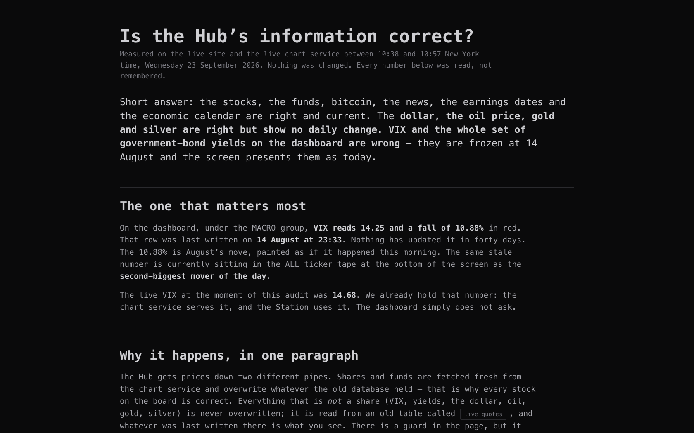
Desktop 1680. The audit page and its four captures, carried over intact.
The live prices still work after the merge
This was the thing most likely to break quietly, so I checked it against production rather than on its own.
This branch
Production 3838dc7
The macro heartbeatwindow.SC_MACRO_TICK
runs 1 · applied 10 · failures 0
runs 1 · applied 10 · failures 0
VIX
14.21, −11.8% vs its 50-day average, from chart API daily bars (read on the SENTIMENT page); the heat tile prices it live at (7.45%)
/candles, /quotes, /macro, /geiger — all answered 200
same
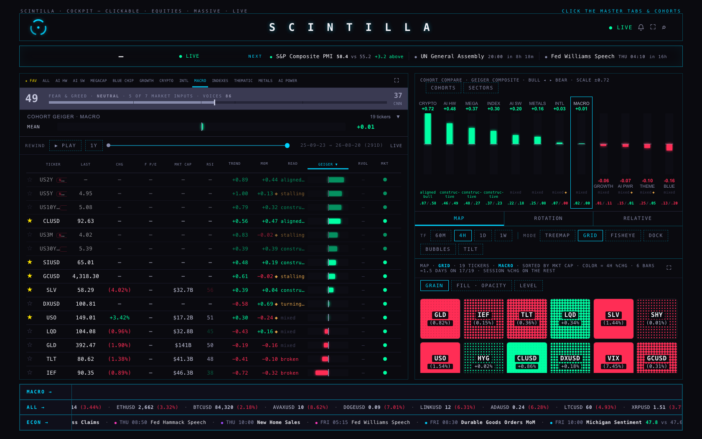
Desktop 1680, the MACRO cohort. Nineteen macro names pricing at once — the rates down the top, then oil, silver, gold, the metals funds, the dollar and the bond funds, each with its Geiger bar and trend. The treemap on the right carries VIX at (7.45%), GCUSD, CLUSD, DXUSD and the rest.
One honest limit. VIX has no row of its own in that board list — it appears as a treemap tile and as the volatility input on the SENTIMENT page. I checked production the same way and it behaves the same, so this is not something the merge did; I am flagging it only so nobody reads its absence as a new fault.
What the tests say
Run
Tests
Passing
Failing
This branch
319
317
2 — the age-function test and xfeed-publish
Production 3838dc7
295
293
the same 2
So the merge adds 24 tests, all of them passing, and introduces no failure that production does not already have. The two that fail were failing before any of this work and are untouched by it.
Indicator Lab is byte-for-byte what production holds — same stored file, unchanged by all five merges. (Its content fingerprint on this branch reads d86cda6a…, which is not the 06523710 quoted in the brief; the file is nonetheless identical to production's, so that looks like a stale number in the note rather than a changed page.)
Everything I did not finish
The Context Lens workshop is not reachable from the Hub — deliverable only, no page under /prototypes/, no card pointing at it.
The X voice is unproven — 404 through my local pass-through; needs one look on the deployed site.
StockTwits has not been collected in 108 days, and new highs vs new lows has no collector at all.
Nothing is pushed and nothing is deployed. The branch sits locally, for the coordinator to merge and deploy from GitHub.